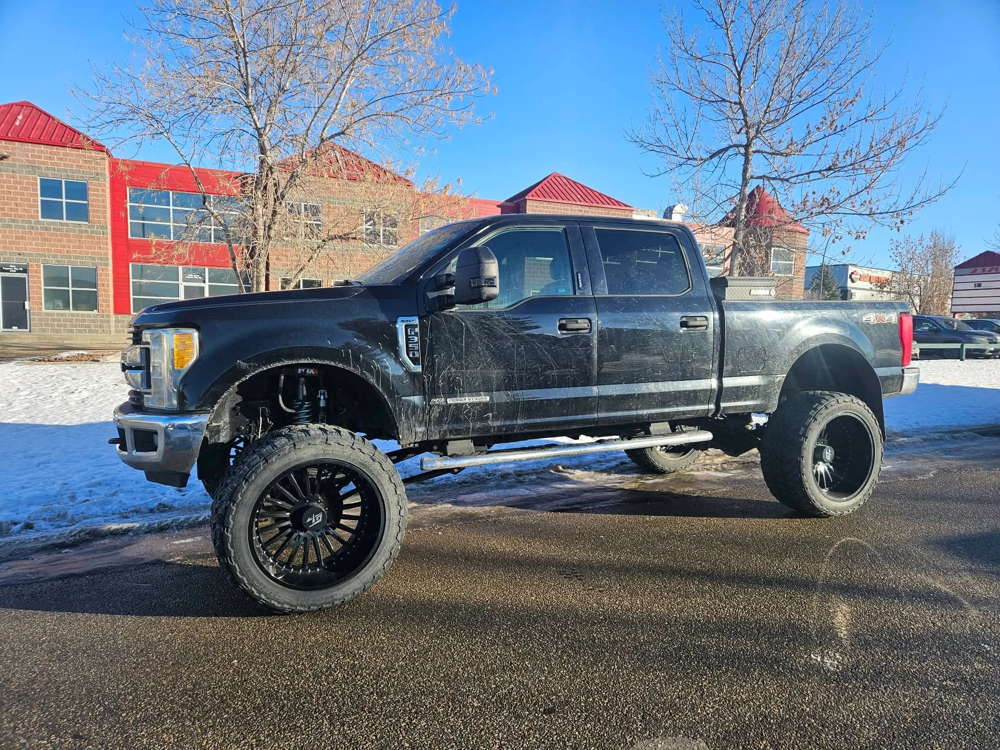
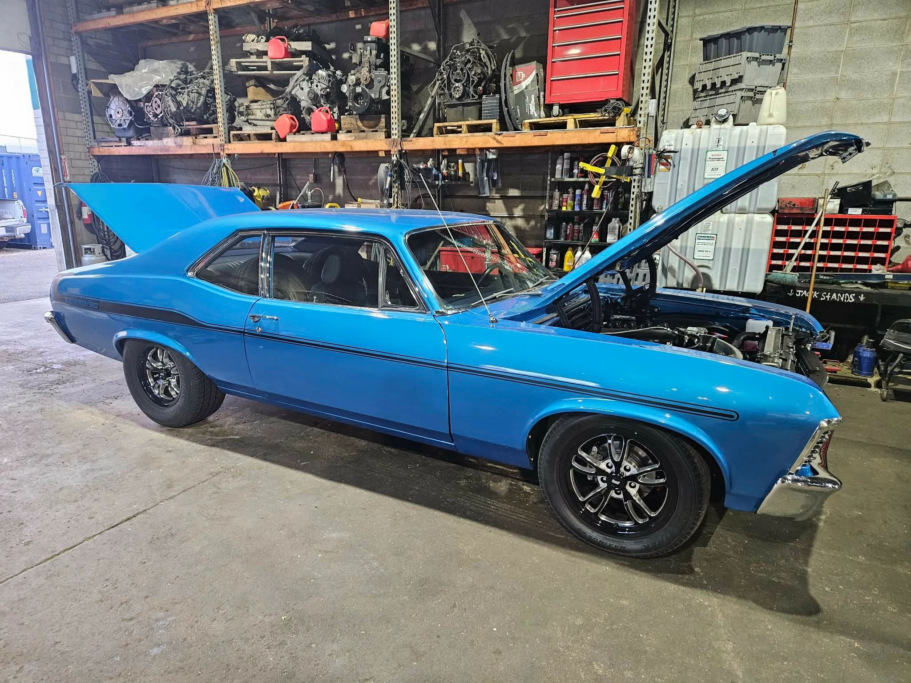
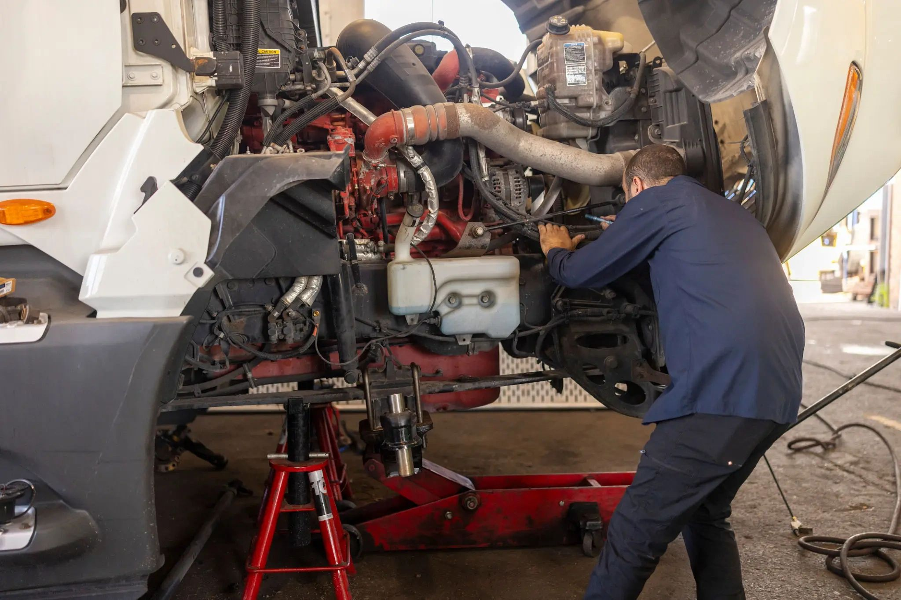

← All services05 / EVERYDAY RELIABILITY
Keep moving with confidence.
Practical maintenance and repair for cars, trucks and heavy-duty vehicles.

THE WORK
Focused on the details that matter.
Accurate inspections and timely repairs help reduce downtime. The shop offers general automotive service alongside its suspension expertise.
Services and areas of work
- General inspections
- Preventive maintenance
- Brake checks and repairs
- Steering and suspension inspections
- Fluid and tire checks
- Electrical system checks
GOOD TO KNOW
What we can help with
Call the shop if you are unsure which service fits your vehicle. The team can discuss the problem and advise on the next step.
- Cars and SUVs
- Light-duty trucks
- Heavy-duty vehicles
- Commercial vehicles


READY TO TALK?
Bring us the details.
We’re at Bay 14, 2355 Pegasus Way NE in Calgary.